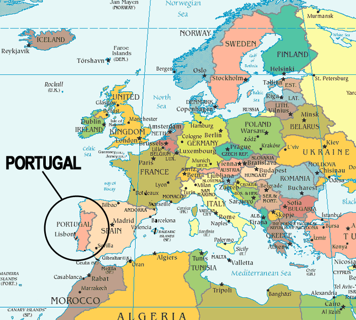
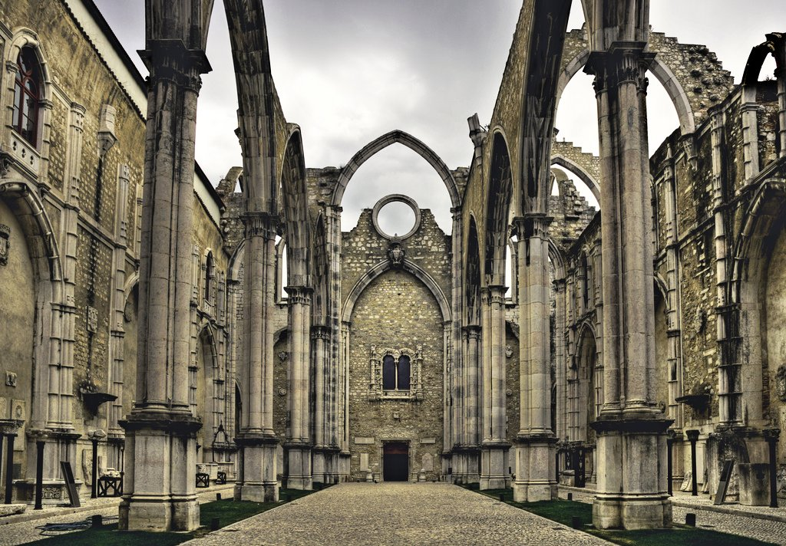
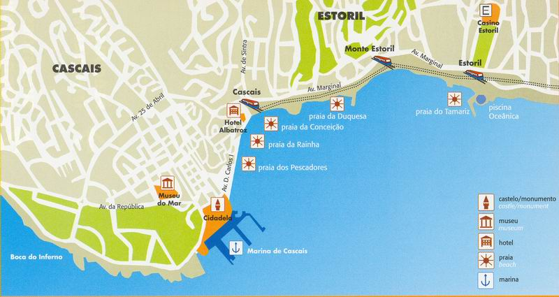

Lisboa is the capital of Portugal, a small little country that is most often overlooked by its bigger neighbor, Spain
There are many things to do in Lisboa. The best way to enjoy any city is to stay for a month to get a feel of the pace, lifestyle and culture. However, if you're crunched on time, then I would recommend some of the following highlights:
|
Although you need to take some means of public transportation to Mosteiro dos Jerónimos as it is in Belém, it is worth the trip to see this great example of Late Gothic style of architecture.
|  |
Situated in the city center, Carmo Convent is a great example is how the 1755 Lisbon Earthquake, ortri-disaster: earthquake, tsunami, and fire, devasted the city and is one of the deadliest earthquakes in history.
| Establishment Name | Speciality | Price | Address |
|---|---|---|---|
| Cervejaria Ramiro | Seafood, especially shellfish | Average 60€ for 2 people | Avenida Almirante Reis, 1H, Mouraria, Lisboa |
| Landeau | Chocolate cake | Average 12€ for 2 people | LX Factory, Rua Rodrigues Faria, 103, Edifício H, Piso 0, Espaço 0.5, Alcântara, Lisboa |
| Rua das Flores, 70, Chiado, Lisboa | |||
| Taberna da Rua das Flores | Portuguese food | Average 30€ for 2 people | Rua das Flores, 103, Chiado, Lisboa |
| O Zé da Mouraria 2 | Portuguese food, better in large groups | Average 25€ for 2 people | Rua Gomes Freire, 60, Pena, Lisboa |
| Fábrica de Nata | Pastel de nata, or egg tarts | Average 6€ for 2 people | Praça dos Restauradores, 62-68, Rossio, Lisboa |
| Madame Petisca Restaurante | Rooftop bar | Average 18€ for 2 people | Rua de Santa Catarina, 17, Bica, Lisboa |
There is a magical train, although not as magical as the Hogwarts train, that will take you from Lisboa to Cascais. If you pick a seat facing the water, you will have an mostly unobstructed view of Atlantic Ocean that is gorgeous. Each stop along the way has beaches for you to enjoy.
|  |
Here are some useful phrases:
Click see some of my own photos of Lisboa
Here is a website with similar content.